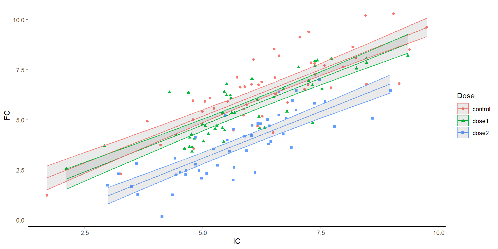
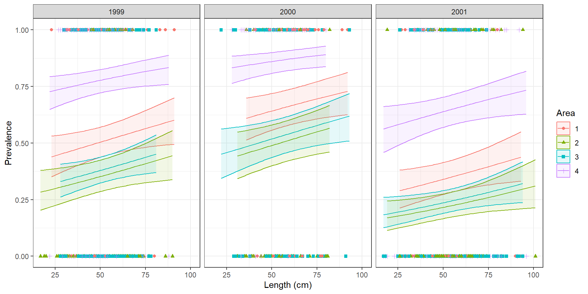
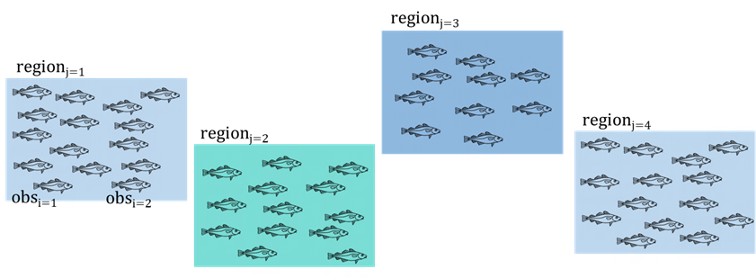
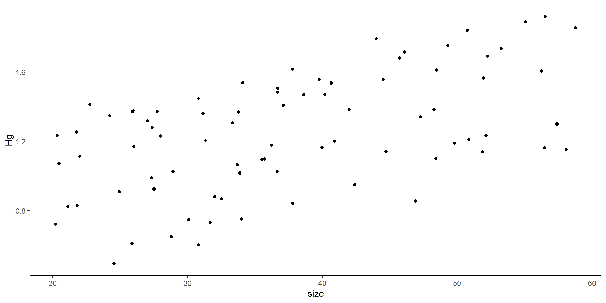
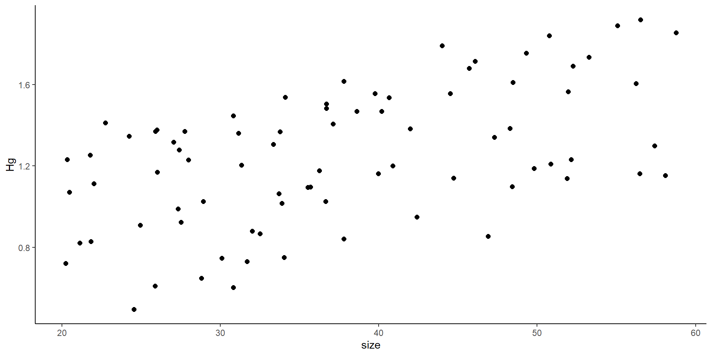
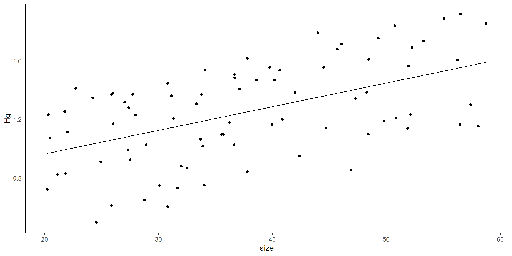
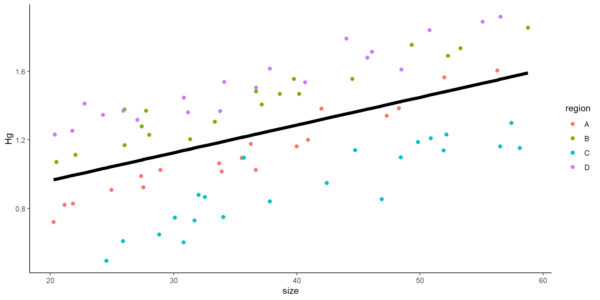
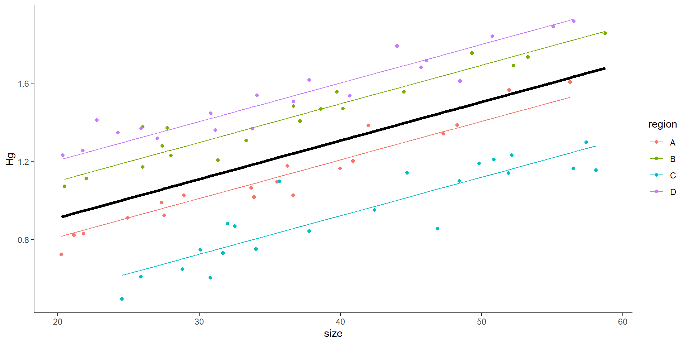
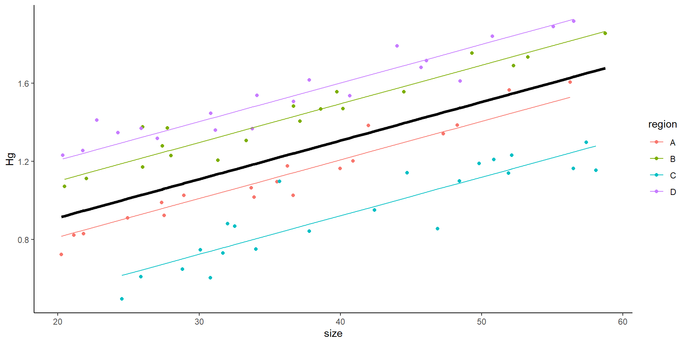
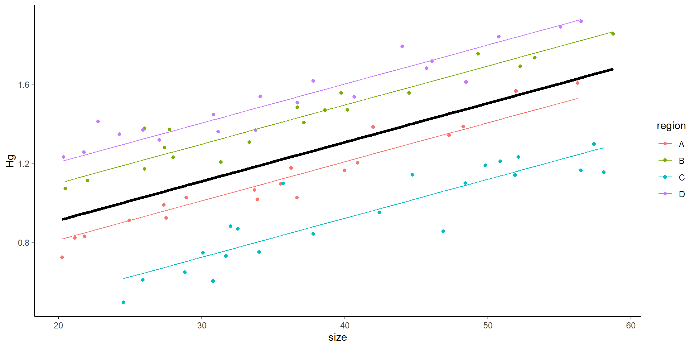

Call:
lm(formula = ReproductiveEffort ~ Foodavailability, data = foodav)
Residuals:
Min 1Q Median 3Q Max
-0.37653 -0.25549 -0.04903 0.23662 0.45750
Coefficients:
Estimate Std. Error t value Pr(>|t|)
(Intercept) 0.89490 0.07262 12.32 <2e-16 ***
Foodavailability 1.19387 0.01590 75.08 <2e-16 ***
---
Signif. codes: 0 '***' 0.001 '**' 0.01 '*' 0.05 '.' 0.1 ' ' 1
Residual standard error: 0.2652 on 61 degrees of freedom
Multiple R-squared: 0.9893, Adjusted R-squared: 0.9891
F-statistic: 5636 on 1 and 61 DF, p-value: < 2.2e-16Mixed Effects Models
This lecture
Review of linear models
Assumptions of glm’s
Overdispersion
How to interpret GLM’s outputs?
- Let’s remember that linear models, and glm’s have a “linear” deterministic component

How to interpret GLM’s outputs?
Let’s remember that linear models, and glm’s have a “linear” deterministic component
In linear models: \(\mu_i = \beta_0 + \beta_1x_{1,i} ...\) (which means, the expected value of y )
In generalized linear models: \(f(\mu_i) = \beta_0 + \beta_1x_{1,i} ...\) (which means, a function of the expected value of y)
The deterministic component is linear
Which is a good thing! Each linear has two components!
A slope
An intercept
The deterministic component is linear
Which is a good thing! Each linear (not polynomial… let’s forget about that for a little while) has two components!
A slope
An intercept
\[ y = mx + b \]
The deterministic component is linear
Which is a good thing! Each linear (not polynomial… let’s forget about that for a little while) has two components!
A slope
An intercept
\[ y = mx + b = b + mx \]
is not any different than:
\[ \begin{align} \mu_i & = \beta_0 + \beta_1x_{1,i} \\ y_i & \sim N(mean = \mu_i, var=\sigma^2) \end{align} \]
Let’s remember what a slope and an intercept is

Let’s remember what a slope and an intercept is

Let’s remember what a slope and an intercept is

Let’s remember what a slope and an intercept is

Slope: For very change in x of 1, y changes 1.5. Intercept: 2
So, if x = 5, then y = 2 + 1.5(5) = 9.5
So, what about linear models?
Each line in a linear model simply has: 1 slope and 1 intercept.

So, what about linear models?
What is the slope? what is the intercept?

So, what about linear models?
\[ \begin{split} y_i & \sim \beta_0 + \beta_1x_i + \epsilon_i \\ \text{where } \epsilon & \sim normal(0,\sigma) \end{split} \] Or, in this specific case:
\[ Reproductive \ effort_i \sim \beta_0 + \beta_1Food \ availability_i + \epsilon_i \\ \]
Intercept and Slope in Linear Models
Intercept: 0.895
Slope: 1.194
\[ \begin{split} y_i & \sim \beta_0 + \beta_1x_i + \epsilon_i \\ \text{where } \epsilon & \sim normal(0,\sigma) \end{split} \]
Results
| Coefficient | Estimate | Std. Error | t-value (test) | p-value |
|---|---|---|---|---|
| Intercept \(\beta_0\) | 0.895 | |||
| Slope \(\beta_1\) | 1.194 |
\[ \begin{split} y_i & \sim \beta_0 + \beta_1x_i + \epsilon_i \\ \text{where } \epsilon & \sim normal(0,\sigma) \end{split} \]
Results
| Coefficient | Estimate | Std. Error | t-value (test) | p-value |
|---|---|---|---|---|
| Intercept \(\beta_0\) | 0.895 | 0.072 | 12.32 | <0.0001 |
| Slope \(\beta_1\) | 1.194 | 0.0159 | 75.08 | <0.0001 |
\[ \begin{split} y_i & \sim \beta_0 + \beta_1x_i + \epsilon_i \\ \text{where } \epsilon & \sim normal(0,\sigma) \end{split} \]
Test:
Ho: Coefficient == 0
Ha Coefficient != 0
How about this one:

How about this one:
Call:
lm(formula = FC ~ IC + Dose, data = drugz)
Residuals:
Min 1Q Median 3Q Max
-2.2610 -0.6360 0.0000 0.6514 2.2876
Coefficients:
Estimate Std. Error t value Pr(>|t|)
(Intercept) 0.51804 0.38892 1.332 0.1849
IC 0.93384 0.05647 16.537 <2e-16 ***
Dosedose1 -0.44007 0.20011 -2.199 0.0294 *
Dosedose2 -2.09915 0.20162 -10.412 <2e-16 ***
---
Signif. codes: 0 '***' 0.001 '**' 0.01 '*' 0.05 '.' 0.1 ' ' 1
Residual standard error: 0.9893 on 146 degrees of freedom
Multiple R-squared: 0.7636, Adjusted R-squared: 0.7588
F-statistic: 157.2 on 3 and 146 DF, p-value: < 2.2e-16- Additive model means only one slope is estimated!
Back to the plot

Parallel lines
1 slope, 3 intercepts
Each line: \(y = mx + b\)
Finding values
Call:
lm(formula = FC ~ IC + Dose, data = drugz)
Residuals:
Min 1Q Median 3Q Max
-2.2610 -0.6360 0.0000 0.6514 2.2876
Coefficients:
Estimate Std. Error t value Pr(>|t|)
(Intercept) 0.51804 0.38892 1.332 0.1849
IC 0.93384 0.05647 16.537 <2e-16 ***
Dosedose1 -0.44007 0.20011 -2.199 0.0294 *
Dosedose2 -2.09915 0.20162 -10.412 <2e-16 ***
---
Signif. codes: 0 '***' 0.001 '**' 0.01 '*' 0.05 '.' 0.1 ' ' 1
Residual standard error: 0.9893 on 146 degrees of freedom
Multiple R-squared: 0.7636, Adjusted R-squared: 0.7588
F-statistic: 157.2 on 3 and 146 DF, p-value: < 2.2e-16\[ \begin{align} \beta_0 & = 0.51 \ \text{intercept for control} \\ \beta_1 & = 0.93 \ \text{slope} \\ \beta_2 & = -0.44 \ \text{Difference in intercept between control and dose 1} \\ \beta_2 & = -2.099 \ \text{Difference in intercept between control and dose 2} \\ \end{align} \]
\[ y_i \sim \beta_0 + \beta_1x_{1,i} + \beta_2x_{2,i} + \beta_3x_{3,i} + \epsilon_i \\ \]
| Site | Value of \(x_2\) | Value of \(x_3\) |
|---|---|---|
| Control | 0 | 0 |
| Dose 1 | 1 | 0 |
| Dose 2 | 0 | 1 |
Finding values
Call:
lm(formula = FC ~ IC + Dose, data = drugz)
Residuals:
Min 1Q Median 3Q Max
-2.2610 -0.6360 0.0000 0.6514 2.2876
Coefficients:
Estimate Std. Error t value Pr(>|t|)
(Intercept) 0.51804 0.38892 1.332 0.1849
IC 0.93384 0.05647 16.537 <2e-16 ***
Dosedose1 -0.44007 0.20011 -2.199 0.0294 *
Dosedose2 -2.09915 0.20162 -10.412 <2e-16 ***
---
Signif. codes: 0 '***' 0.001 '**' 0.01 '*' 0.05 '.' 0.1 ' ' 1
Residual standard error: 0.9893 on 146 degrees of freedom
Multiple R-squared: 0.7636, Adjusted R-squared: 0.7588
F-statistic: 157.2 on 3 and 146 DF, p-value: < 2.2e-16| Measurement | Intercept | Slope |
|---|---|---|
| Control | 0.51 | 0.93 |
| Dose 1 | 0.51 - 0.44 | 0.93 |
| Dose 2 | 0.51 -2.099 | 0.93 |
Statistical inference
anova
emmeans
contrast
Analysis of Variance Table
Response: FC
Df Sum Sq Mean Sq F value Pr(>F)
IC 1 342.36 342.36 349.825 < 2.2e-16 ***
Dose 2 119.30 59.65 60.949 < 2.2e-16 ***
Residuals 146 142.89 0.98
---
Signif. codes: 0 '***' 0.001 '**' 0.01 '*' 0.05 '.' 0.1 ' ' 1 contrast estimate SE df t.ratio p.value
control - dose1 0.44 0.200 146 2.199 0.0747
control - dose2 2.10 0.202 146 10.412 <.0001
dose1 - dose2 1.66 0.198 146 8.377 <.0001
P value adjustment: tukey method for comparing a family of 3 estimates statistical inference
anova compares variance. Is the variance between groups higher than within groups?

Interactive

- Each line has its own slope and its own intercept
Interactive
Call:
lm(formula = FC ~ IC * Dose, data = drugz)
Residuals:
Min 1Q Median 3Q Max
-2.3167 -0.6262 -0.0031 0.6443 2.1836
Coefficients:
Estimate Std. Error t value Pr(>|t|)
(Intercept) 0.38733 0.59401 0.652 0.5154
IC 0.95418 0.08981 10.624 <2e-16 ***
Dosedose1 0.07353 0.85237 0.086 0.9314
Dosedose2 -2.21858 0.86308 -2.571 0.0112 *
IC:Dosedose1 -0.08529 0.13509 -0.631 0.5288
IC:Dosedose2 0.02324 0.13917 0.167 0.8676
---
Signif. codes: 0 '***' 0.001 '**' 0.01 '*' 0.05 '.' 0.1 ' ' 1
Residual standard error: 0.9939 on 144 degrees of freedom
Multiple R-squared: 0.7647, Adjusted R-squared: 0.7565
F-statistic: 93.59 on 5 and 144 DF, p-value: < 2.2e-16\[ \begin{align} \beta_0 & = 0.38 \ \text{intercept for control} \\ \beta_1 & = 0.954 \ \text{slope for control} \\ \beta_2 & = -0.073 \ \text{Difference in intercept between control and dose 1} \\ \beta_3 & = -2.24 \ \text{Difference in intercept between control and dose 2} \\ \beta_4 & = -0.085 \ \text{Difference in slope between control and dose 1} \\ \beta_5 & = 0.023 \ \text{Difference in slope between control and dose 2} \\ \end{align} \]
| Site | Value of \(x_2\) | Value of \(x_3\) | Value of \(x_4\) | Value of \(x_5\) |
|---|---|---|---|---|
| Control | 0 | 0 | 0 | 0 |
| Dose 1 | 1 | 0 | 1 | 0 |
| Dose 2 | 0 | 1 | 0 | 1 |
Doing inference of interactions
Analysis of Variance Table
Response: FC
Df Sum Sq Mean Sq F value Pr(>F)
IC 1 342.36 342.36 346.5514 <2e-16 ***
Dose 2 119.30 59.65 60.3790 <2e-16 ***
IC:Dose 2 0.63 0.31 0.3168 0.729
Residuals 144 142.26 0.99
---
Signif. codes: 0 '***' 0.001 '**' 0.01 '*' 0.05 '.' 0.1 ' ' 1NOTE: Results may be misleading due to involvement in interactions contrast estimate SE df t.ratio p.value
control - dose1 0.44 0.202 144 2.173 0.0794
control - dose2 2.08 0.204 144 10.175 <.0001
dose1 - dose2 1.64 0.201 144 8.136 <.0001
P value adjustment: tukey method for comparing a family of 3 estimates Interactions

Finding values (predictions)
Assignment question 1 📝
Look at the summary. And before continuing make sure you understand it. If you don’t, now is the time to raise your hand.
You need to calculate the expected probability (we’ll call this \(\pi\)) of an individual being infected for each of the following two cases:
- An individual of length 50 from Area 1, in 1999
- An individual of length 50 from Area 3, in 2001
GLM

Model
Call:
glm(formula = Prevalence ~ Length + Year + Area, family = binomial(link = "logit"),
data = cod)
Coefficients:
Estimate Std. Error z value Pr(>|z|)
(Intercept) -0.465947 0.269333 -1.730 0.083629 .
Length 0.009654 0.004468 2.161 0.030705 *
Year2000 0.566536 0.169715 3.338 0.000843 ***
Year2001 -0.680315 0.140175 -4.853 1.21e-06 ***
Area2 -0.626192 0.186617 -3.355 0.000792 ***
Area3 -0.510470 0.163396 -3.124 0.001783 **
Area4 1.233878 0.184652 6.682 2.35e-11 ***
---
Signif. codes: 0 '***' 0.001 '**' 0.01 '*' 0.05 '.' 0.1 ' ' 1
(Dispersion parameter for binomial family taken to be 1)
Null deviance: 1727.8 on 1247 degrees of freedom
Residual deviance: 1537.6 on 1241 degrees of freedom
(6 observations deleted due to missingness)
AIC: 1551.6
Number of Fisher Scoring iterations: 4These are all from a linear model. Need to transform them to get the real value in probabilistic scale
Additive! One slope
How to estimate the values?
Call:
glm(formula = Prevalence ~ Length + Year + Area, family = binomial(link = "logit"),
data = cod)
Coefficients:
Estimate Std. Error z value Pr(>|z|)
(Intercept) -0.465947 0.269333 -1.730 0.083629 .
Length 0.009654 0.004468 2.161 0.030705 *
Year2000 0.566536 0.169715 3.338 0.000843 ***
Year2001 -0.680315 0.140175 -4.853 1.21e-06 ***
Area2 -0.626192 0.186617 -3.355 0.000792 ***
Area3 -0.510470 0.163396 -3.124 0.001783 **
Area4 1.233878 0.184652 6.682 2.35e-11 ***
---
Signif. codes: 0 '***' 0.001 '**' 0.01 '*' 0.05 '.' 0.1 ' ' 1
(Dispersion parameter for binomial family taken to be 1)
Null deviance: 1727.8 on 1247 degrees of freedom
Residual deviance: 1537.6 on 1241 degrees of freedom
(6 observations deleted due to missingness)
AIC: 1551.6
Number of Fisher Scoring iterations: 4\[ logistic(\pi_i) = \beta_0 + \beta_1 x_{1,i}+ \beta_2 x_{2,i} + \beta_3 x_{3,i}+ \beta_4 x_{4,i} + \beta_5 x_{5,i} + \beta_6 x_{6,i} \]
Site
| Value of \(x_2\) | Value of \(x_3\) | Value of \(x_4\) | Value of \(x_5\) | Value of \(x_6\) | Value of \(x_7\) | |
|---|---|---|---|---|---|---|
| 2000 | 2001 | Area 1 | Area 2 | Area 3 | Area 4 | |
| Area-1 1999 | 0 | 0 | 0 | 0 | 0 | 0 |
| Area-1 2000 | 1 | 0 | 0 | 0 | 0 | 0 |
| Area-1 2001 | 0 | 1 | 0 | 0 | 0 | 0 |
| Area-2 1999 | 0 | 0 | 0 | 1 | 0 | 0 |
| Area-2 2000 | 0 | 1 | 0 | 1 | 0 | 0 |
| Area-2 2001 | 0 | 0 | 1 | 1 | 0 | 0 |
| Area 3- 1999 | 0 | 0 | 0 | 0 | 1 | 0 |
| Area 3 -2000 | 1 | 0 | 0 | 0 | 1 | 0 |
| Area 3 - 2001 | 0 | 1 | 0 | 0 | 1 | 0 |
| Area 4 - 1999 | 0 | 0 | 0 | 0 | 0 | 1 |
| Area 4 - 2000 | 0 | 1 | 0 | 0 | 0 | 1 |
| Area 4 2001 | 0 | 0 | 1 | 0 | 0 | 1 |
Logistic regression assumptions
Binomial distribution
Binary data (1, 0)
Poisson assumptions
We have talked about count-data
While we usually think Poisson, it has an important assumption: \(Var(y_i) = \lambda\_i\)

How to check for overdispersion?
Package: performance
What to do when there is overdispersion?
I have never encountered non-overdispersed count data!
So, what to do?
Add more covariates
Make a mixed effects model
Zero inflated models!
What to do when there is overdispersion?
If we suspect zero inflation, we have several options for zero inflated models
Negative binomial regression
Hurdle models
Zero-inflated mixture model (mixed-effects)
GLM’s other assumptions
Data is independently distributed
Error is independent
Question 1
Interested in the concentration of mercury in Lake Michigan

We use code to randomly select 4 sites
At each site we set up a net
Return later and test Hg concentration of each fish
Question 1:
What is the experimental unit?
What is the response variable?
Where is sampling coming from or being introduced?

What do we care about?
Question 2:
We are testing infection prevalence in turkeys 🦃
We trap multiple individuals from a flock, and test them all 🦃
We do this for multiple flocks
What is introducing variance?
Question 3
We are testing the effects of a new drug on mice
You have 100 🐁. And three groups: control, dose 1 and dose 2
You measure their heartbeat pre-trial, 5 weeks post trial, and 10 weeks post trial
Do we care about individual 🐭 or the general effect of the drug?
Question 4
Government is studying how quickly people return to work after receiving unemployment benefits at a national level based on their educational level
Each observation is an individual
Response variables are duartion of benefit, and explanatory variables are education, and industry
You randomly select 25 regional offices to obtain the data
We want to know national levels, but do regional differences matter?
Research Questions
- Fish and Hg. Research question: Should we limit consumption of fish over a certain size
- Infection prevalence in turkeys: Research question: You are estimating the probability of an individual being infected to be used as a section on a demographic model?
- Mice. Research question:Is the drug affecting the mice heart rate?
- People Research question: How does educational level affect unemployment time?
Experiments : 🎣 🦃 🐁🧑🏭
For one experiment answer:
How would you analyze the data
Are they breaking any assumptions???
What is the individual unit, and what is the experimental unit
What is the response variable
Where is the variance coming from?
Example 1:
In the first example, we are looking at the relationship between size and Hg concentration, in order to know whether to publish a consumption advisory for fish over a certain size. So, far, we have looked at examples in which our sampling is “random”
size Hg ind
1 41.99086 1.3827550 1
2 33.89565 1.0172009 2
3 51.96077 1.5652670 3
4 20.23337 0.7227433 4
5 21.82249 0.8296023 5
6 21.12350 0.8224048 6Could we simply look at it as
\[ Hg_i \sim \beta_0 + \beta_1 + \epsilon \]
Example 1:
But now the data looks like this:
size Hg region ind
1 41.99086 1.3827550 A 1
2 33.89565 1.0172009 A 2
3 51.96077 1.5652670 A 3
25 40.18645 1.4688691 B 25
26 37.12595 1.4055383 B 26
27 20.46721 1.0708612 B 27
56 49.80884 1.1882948 C 56
57 42.40157 0.9499704 C 57
80 56.51251 1.9176455 D 80
NA NA NA <NA> NAHow do we analyze it?
So far we have looked at linear models (or glms)
\[ \underbrace{E[y_i]}_{\text{expected value}} = \underbrace{\beta_0 + \beta_1x_{1,i} + ... \beta_mx_{m,i}}_{deterministic} \]
\[ y_i \sim \underbrace{N(mean=E[y_i], var=\sigma^2)}_{stochastic} \]
Same as:
\[ y_i = \underbrace{\beta_0 + \beta_1x_{1,i} + ... \beta_mx_{m,i}}_{deterministic} \ + \underbrace{\epsilon}_{stachastic} \]
\[\epsilon \sim nomral(0,\sigma) \]
linear model

\[ \underbrace{E[y_i]}_{\text{expected value}} = \underbrace{\beta_0 + \beta_1x_{1,i} + ... \beta_mx_{m,i}}_{deterministic} \]
\[ y_i \sim \underbrace{N(mean=E[y_i], var=\sigma^2)}_{stochastic} \]
Stochastic portion of a model
When we talk about the stochastic portion of a model:
- \[ y_i \sim \underbrace{\beta_0 + \beta_1x_{1,i} + ... \beta_mx_{m,i}}_{deterministic} \ + \underbrace{\epsilon}_{stochastic} \]
- What is introducing the variance?
- Is the variance (or observation error) independent?
- It is unexplained variance!
- 🎣 🦃 🐁🧑🏭
- Is the variance unexplained?
Mixed model
Think… how do we introduce that variance?
\[ y_i \sim \underbrace{\beta_0 + \beta_1x_{1,i} + ... \beta_mx_{m,i}}_{deterministic} \ + \underbrace{\epsilon}_{stachastic} \]
Think for a moment on this specific question: 🐟
\[ y_i \sim \underbrace{\beta_0 + \beta_1x_{1,i}}_{deterministic} + \underbrace{\epsilon}_{stachastic} \]
\[ Hg_i \sim \underbrace{\beta_0 + \beta_1size_{i}}_{deterministic} + \underbrace{\epsilon}_{stachastic} \]
\[ \epsilon \sim N(0,\sigma)\]

The variance can affect the slope, the intercept, or both

What is the problem with this? We can actually do a linear model
- But remember! there might be some effect of the locations where nets were placed
Plotting the data as a linear model

- You might think this is all good… but

So… we do a mixed model! Where we introduce the variance from the site
But… why don’t we simply add site as a covariate?
You will be tasked with answering this on your next assignment!
The variance can affect the slope, the intercept, or both
Random effects introduce variance.
It can introduce varianceto the intercept or to the slope

Mixed model
\[ Hg_i \sim \beta_0 + \beta_1size_{i} + \epsilon \]
i individuals, j sites (4)
\[ Hg_i \sim \underbrace{(\beta_0 +\underbrace{\gamma_j}_{\text{Random intercept}})}_{intercept} + \underbrace{\beta_1size_{i}}_{slope} +\underbrace{\epsilon}_\text{ind var} \]
Variance comes from random “selection” of fish within a net
Variance comes from random “selection” of sites
Mixed model
This is the result of a mixed model:

Mixed effects model output
Family: gaussian ( identity )
Formula: Hg ~ size + (1 | region)
Data: HgDat_df
AIC BIC logLik deviance df.resid
-147.6 -138.0 77.8 -155.6 76
Random effects:
Conditional model:
Groups Name Variance Std.Dev.
region (Intercept) 0.070287 0.26512
Residual 0.006395 0.07997
Number of obs: 80, groups: region, 4
Dispersion estimate for gaussian family (sigma^2): 0.0064
Conditional model:
Estimate Std. Error z value Pr(>|z|)
(Intercept) 0.5160480 0.1364710 3.781 0.000156 ***
size 0.0197595 0.0008332 23.714 < 2e-16 ***
---
Signif. codes: 0 '***' 0.001 '**' 0.01 '*' 0.05 '.' 0.1 ' ' 1
Output
